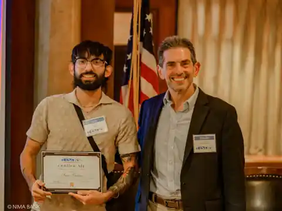

Technical Support
Clear troubleshooting, documentation, escalation, and user-focused problem solving.
Portfolio
Technical Support | Software Development | Security Operations
I am a Computer Programming and Information Systems student, U.S. Marine Corps veteran, and early-career technology professional building practical skills in web development, troubleshooting, and secure systems.

Focus
Clear troubleshooting, documentation, escalation, and user-focused problem solving.
Hands-on work with HTML, CSS, JavaScript, React, Next.js, APIs, MongoDB, and AWS S3.
Experience with access control, incident response, accountability, and high-pressure decisions.
Featured Work
My project work connects classroom learning with real workflows: portfolio development, event systems, billing tools, forms, uploads, records, and admin-facing features.
Explore projectsBackground
My career path combines Marine Corps leadership, college study, technical support, and software development experience with the Long Island Systems User Group.
Read my story